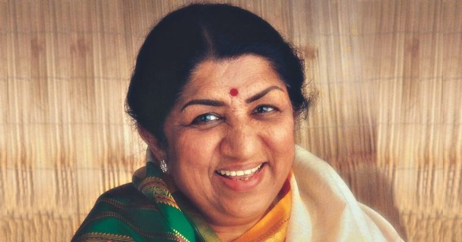

Lata Mangeshkar
1929-2022
The Nightingale of India
Lata Mangeshkar the “Nightingale of India” the “Queen of Melody” the “Voice of the Millennium” and a superstar singer who gave her voice to hundreds of Bollywood movies for more than 70 years.Lata Mangeshkar was born on 28 September 1929 in Indore, Madhya Pradesh. She was the elder daughter of Pandit Deenanath Mangeshkar and Shevanti. Lata's father was a Marathi musician, classical singer, and theatre actor. Lata first started working as a child artist in her father's plays. But her singing career started in 1942 at the age of 13, when she recorded her first song for Vasant Joglekar's Marathi Film “Keerti Hasaal”.
Achievements
- Lata Mangeshkar, in 1969 won the Padma Bhushan which is the third-highest civilian award for “distinguished service”.
- In 1974, Lata Ji was the first Indian artist to perform at London's Royal Albert Hall where she covered her biggest hits over the decades like “Aaja Re Pardesi from “Madhumati”, “Inhin Logon ne” from “Pakeezah”, “Aayega aanewala” from “Mahal” and many others.
- The Guinness Book of Records had listed Lata Mangeshkar as “the most recorded artist in music history” between 1948 and 1974 in its 1974 edition
- In 1999, Lata Mangeshkar received Padma Vibhushan which is the second-highest civilian award followed by Bharat Ratna -the highest civilian award, in 2001.
- Lata Ji was the recipient of Filmfare, IIFA -Lifetime Achievement Award, Dadasaheb Phalke Award, and other numerous awards she bagged for her contribution to music with her life and career for more than 9 decades.